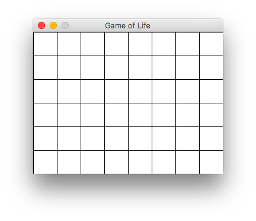
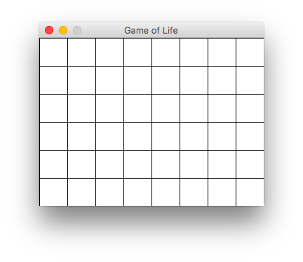

Игра «Жизнь»
В этой работе вашей задачей является написать симулятор игры «Жизнь».

Игру «Жизнь» изобрел математик Джон Хортон Конвей в 1970 году. Она пользовалась популярностью не только среди его коллег. Об увлекательности игры «Жизнь» свидетельствуют результаты множества интересных исследований и многочисленные компьютерные реализации. При этом она имеет непосредственное отношение к перспективной области математики - теории клеточных автоматов.
Правила игры «Жизнь» достаточно простые1:
- «Жизнь» разыгрывается на бесконечном клеточном поле.
- У каждой клетки 8 соседних клеток.
- В каждой клетке может жить существо.
- Существо с двумя или тремя соседями выживает в следующем поколении, иначе погибает от одиночества или перенаселённости.
- В пустой клетке с тремя соседями в следующем поколении рождается существо.
Подробнее про игру «Жизнь» можно прочитать в журнале Квант.
Быстрый прототип¶
Для реализации клеточного поля мы будем использовать набор модулей pygame, предназначенный для создания компьютерных игр.
Для начала нам нужно создать игровое поле, на котором будет разворачиваться действие игры «Жизнь». Поэтому напишем класс GameOfLife, который принимает следующие параметры:
width- ширина окна (по умолчанию 640px);height- высота окна (по умолчанию 480px);cell_size- высота и ширина клетки (по умолчанию 10px).
Ниже приведен пример создания трех игровых полей одинаковых размеров, но с разным рамзером клеток (10, 20 и 40, соответственно):

 

Далее представлен листинг, который позволяет создать игровое поле:
import pygame from pygame.locals import * class GameOfLife: def __init__(self, width: int=640, height: int=480, cell_size: int=10, speed: int=10) -> None: self.width = width self.height = height self.cell_size = cell_size # Устанавливаем размер окна self.screen_size = width, height # Создание нового окна self.screen = pygame.display.set_mode(self.screen_size) # Вычисляем количество ячеек по вертикали и горизонтали self.cell_width = self.width // self.cell_size self.cell_height = self.height // self.cell_size # Скорость протекания игры self.speed = speed def draw_lines(self) -> None: # @see: http://www.pygame.org/docs/ref/draw.html#pygame.draw.line for x in range(0, self.width, self.cell_size): pygame.draw.line(self.screen, pygame.Color('black'), (x, 0), (x, self.height)) for y in range(0, self.height, self.cell_size): pygame.draw.line(self.screen, pygame.Color('black'), (0, y), (self.width, y)) def run(self) -> None: pygame.init() clock = pygame.time.Clock() pygame.display.set_caption('Game of Life') self.screen.fill(pygame.Color('white')) running = True while running: for event in pygame.event.get(): if event.type == QUIT: running = False self.draw_lines() pygame.display.flip() clock.tick(self.speed) pygame.quit() if __name__ == '__main__': game = GameOfLife(320, 240, 20) game.run()
Note
Подробное описание всех используемых функций из pygame читайте в официальной документации.
Каждая клетка может находиться в двух состояниях: «живая» или «мертвая». Нам нужно создать матрицу клеток размером cell_height \times cell_width, которые в дальнейшем мы будем отображать на нашем поле, окрашивая их в зеленый и белый цвета, для «живых» и «мертвых» клеток соответственно.
def create_grid(self, randomize: bool=False) -> Grid: """ Создание списка клеток. Клетка считается живой, если ее значение равно 1, в противном случае клетка считается мертвой, то есть, ее значение равно 0. Parameters ---------- randomize : bool Если значение истина, то создается матрица, где каждая клетка может быть равновероятно живой или мертвой, иначе все клетки создаются мертвыми. Returns ---------- out : Grid Матрица клеток размером `cell_height` х `cell_width`. """ pass
Пример использования:
>>> from pprint import pprint as pp >>> game = GameOfLife(320, 240, 40) >>> grid = game.create_grid(randomize=True) >>> pp(grid) [[1, 1, 0, 0, 1, 1, 1, 1], [0, 1, 1, 1, 1, 1, 1, 0], [1, 0, 1, 1, 0, 0, 0, 0], [1, 0, 0, 0, 0, 0, 0, 1], [1, 0, 1, 1, 1, 1, 0, 0], [1, 1, 1, 1, 0, 1, 1, 1]] >>> grid = game.create_grid(randomize=False) >>> pp(grid) [[0, 0, 0, 0, 0, 0, 0, 0], [0, 0, 0, 0, 0, 0, 0, 0], [0, 0, 0, 0, 0, 0, 0, 0], [0, 0, 0, 0, 0, 0, 0, 0], [0, 0, 0, 0, 0, 0, 0, 0], [0, 0, 0, 0, 0, 0, 0, 0]]
Теперь нам нужно окрашивать клетки в зеленый или белый цвета в зависимости от того живая клетка или мертвая. Каждая клетка на поле представлена прямоугольником размера cell_size \times cell_size, который можно закрасить с помощью функции pygame.draw.rect. Эта функция принимает следующие параметры:
Surface- где нужно отрисовать прямоугольник (в нашем случае этоscreen);color- цвет, которым следует закрасить прямоугольник (pygame.Color('white')илиpygame.Color('green'));Rect- координаты прямоугольника в формате(x, y, длина стороны a, длина стороны b).
def draw_grid(self) -> None: """ Отрисовка списка клеток с закрашиванием их в соответствующе цвета. """ pass
Hint
Добавьте вызов метода draw_grid() в метод run() перед обновлением поля pygame.display.flip().

Теперь осталось написать метод для обновления поля, чтобы состояния клеток менялись по описанным в начале правилам. Чтобы определить как должно измениться состояние клетки необходимо получить состояние ее соседей. Напишите функцию, которая получает для клетки список ее соседей:
def get_neighbours(self, cell: Cell) -> Cells: """ Вернуть список соседних клеток для клетки `cell`. Соседними считаются клетки по горизонтали, вертикали и диагоналям, то есть, во всех направлениях. Parameters ---------- cell : Cell Клетка, для которой необходимо получить список соседей. Клетка представлена кортежем, содержащим ее координаты на игровом поле. Returns ---------- out : Cells Список соседних клеток. """ pass
Теперь нужно написать функцию для обновления состояния всех клеток:
Note
Важно помнить, что обновление всего поля должно происходить за один раз, если состояние клеток менять последовательно, то это повлияет на результат игры.
def get_next_generation(self) -> Grid: """ Получить следующее поколение клеток. Returns ---------- out : Grid Новое поколение клеток. """ pass
Теперь у вас должна быть полностью рабочая игра.
Разделяем логику и интерфейс¶
В какой-то момент наша игра стала пользовататься популярностью среди друзей и они начали высквазывать свои пожелания: кто-то захотел консольную версию игры, некоторые захотели сохранять и загружать состояние игры, также некоторые заметили, что игра продолжается даже несмотря на то, что на поле не осталось ни одной живой клетки, нашлись и те кто захотел ограничить число поколений, а кто-то хотел в текущем интерфейсе иметь возможность самостоятельно помечать состояние клеток.
Давайте начнем с того, что в классе GameOfLife оставим только методы связанные с логикой (говорят бизнес-логикой) игры, а также учтем некоторые пожелания наших новых пользователей:
class GameOfLife: def __init__(self, size: Tuple[int, int], randomize: bool=True, max_generations: Optional[int]=None) -> None: # Размер клеточного поля self.rows, self.cols = size # Предыдущее поколение клеток self.prev_generation = self.create_grid() # Текущее поколение клеток self.curr_generation = self.create_grid(randomize=randomize) # Максимальное число поколений self.max_generations = max_generations # Текущее число поколений self.generations = 1 def create_grid(self, randomize: bool=False) -> Grid: # Copy from previous assignment def get_neighbours(self, cell: Cell) -> Cells: # Copy from previous assignment def get_next_generation(self) -> Grid: # Copy from previous assignment def step(self) -> None: """ Выполнить один шаг игры. """ pass @property def is_max_generations_exceeded(self) -> bool: """ Не превысило ли текущее число поколений максимально допустимое. """ pass @property def is_changing(self) -> bool: """ Изменилось ли состояние клеток с предыдущего шага. """ pass @staticmethod def from_file(filename: pathlib.Path) -> 'GameOfLife': """ Прочитать состояние клеток из указанного файла. """ pass def save(filename: pathlib.Path) -> None: """ Сохранить текущее состояние клеток в указанный файл. """ pass
Как вы могли заметить, теперь мы должны хранить состояние текущего и предыдущего поколений клеток:
>>> random.seed(1234) >>> life = GameOfLife((5, 5)) >>> life.curr_generation [[1, 0, 0, 0, 0], [0, 0, 1, 0, 0], [0, 0, 1, 1, 1], [0, 0, 0, 0, 0], [1, 0, 0, 1, 0]] >>> life.step() >>> life.prev_generation [[1, 0, 0, 0, 0], [0, 0, 1, 0, 0], [0, 0, 1, 1, 1], [0, 0, 0, 0, 0], [1, 0, 0, 1, 0]] >>> life.curr_generation [[0, 0, 0, 0, 0], [0, 1, 1, 0, 0], [0, 0, 1, 1, 0], [0, 0, 1, 0, 1], [0, 0, 0, 0, 0]]
Также мы учли, что игра должна прекращаться, если на очередном шаге ни одна из клеток не меняет своего состояния (то есть, сложилась стабильная конфигурация или на поле не осталось ни одной «живой» клетки), а также, что число поколений не должно превышать заданного предела, если он был указан:
>>> random.seed(4321) >>> life = GameOfLife((10, 10), max_generations=50) >>> while life.is_changing and not life.is_max_generations_exceeded: ... life.step() >>> life.generations 20
Note
Мы не рассматриваем случай, когда конфигурация на очередном шаге в точности (без сдвигов и поворотов) повторит себя же на одном из более ранних шагов (то есть, когда складывается периодическая конфигурация). Вы можете рассмотреть этот случай в качестве дополнительного упражения.
И наконец мы добавили методы для сохранения и загрузки состояния игры:
>>> life = GameOfLife.from_file('glider.txt') >>> life.curr_generation [[0, 1, 0, 0, 0], [0, 0, 1, 0, 0], [1, 1, 1, 0, 0], [0, 0, 0, 0, 0], [0, 0, 0, 0, 0]] >>> for _ in range(4): ... life.step() >>> life.curr_generation [[0, 0, 0, 0, 0], [0, 0, 1, 0, 0], [0, 0, 0, 1, 0], [0, 1, 1, 1, 0], [0, 0, 0, 0, 0]] >>> life.save(pathlib.Path('glider-4-steps.txt'))
(cs102) $ cat glider-4-steps.txt 00000 00100 00010 01110 00000
Добавляем интерфейс¶
Мы реализуем две версии интрефейса: текстовый с помощью стандартного модуля curses (для пользователей ОС Windows скорее всего придется дополнительно установить пакет windows-curses) и графический с помощью набора модулей pygame, которые мы рассматривали ранее в этой работе.
import abc class UI(abc.ABC): def __init__(self, life: GameOfLife) -> None: self.life = life @abc.abstractmethod: def run(self) -> None: pass
Реализуем консольную версию игры:
import curses class Console(UI): def __init__(self, life: GameOfLife) -> None: super().__init__(life) def draw_borders(self, screen) -> None: """ Отобразить рамку """ pass def draw_grid(self, screen) -> None: """ Отобразить состояние клеток """ pass def run(self) -> None: screen = curses.initscr() # PUT YOUR CODE HERE curses.endwin()
>>> life = GameOfLife((24, 80), max_generations=50) >>> ui = Console(life) >>> ui.run()
import pygame from pygame.locals import * class GUI(UI): def __init__(self, life: GameOfLife, cell_size: int=10, speed: int=10) -> None: # ... super().__init__(life) def draw_lines(self) -> None: # Copy from previous assignment def draw_grid(self) -> None: # Copy from previous assignment def run(self) -> None: # Copy from previous assignment
Добавьте возможность помечать состояние клеток на игровом поле и ставить игру на паузу как показано ниже:
Использование аргументов командной строки¶
(cs102) $ gof-console.py --help (cs102) $ gof-console.py --rows 10 --cols 10 --max-generations 50 (cs102) $ gof-gui.py --width 640 --height 480 --cell-size 10
-
https://life.written.ru - программа для моделирования игры «Жизнь» ↩